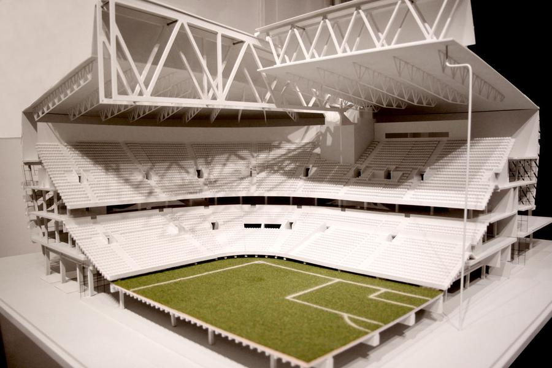
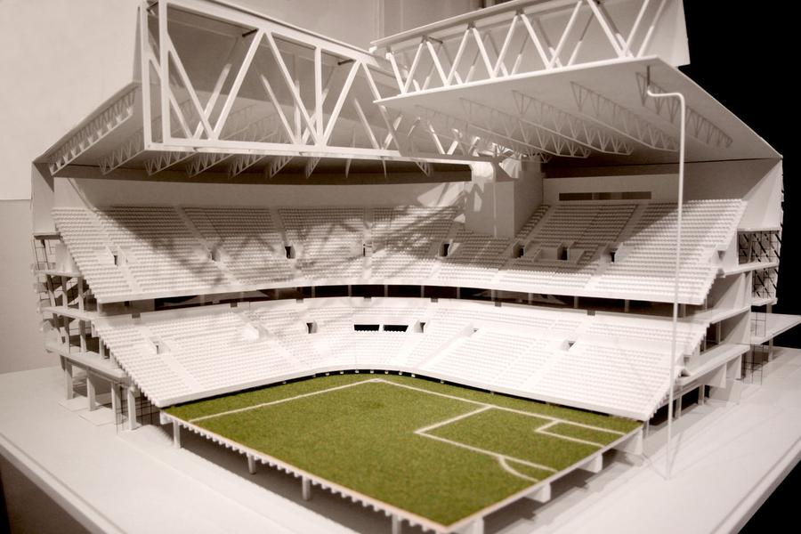

Что такое 3д принтер
3Д-принтер – устройство, которое обрабатывает трехмерную компьютерную модель и на основании полученных данных строит объемный предмет. Чаще всего объекты создаются с помощью послойного наплавления пластика или застывания специальной смолы.
Вне зависимости от применяемой технологии, принтер отлично подходит для изготовления твердых изделий, имеющих сложную форму. Благодаря этому трехмерное моделирование применяют в самых разных сферах: от производства сувениров до строительства зданий.
Всем, кто интересуется 3D-принтерами, стоит ознакомиться с реальными ситуациями его применения. Обычные пользователи расширят свой кругозор, а потенциальные предприниматели увидят интересные возможности для создания бизнеса.
Где применяется 3D-принтер
Как уже отмечалось, 3D-принтеры изготавливают объемные изделия, используя в качестве основы специальные компьютерные модели. Такой метод производства обладает следующими преимуществами:
- создание предметов любой формы и сложности;
- высокая скорость работы;
- небольшое количество брака;
- применение самых разных материалов (от металлизированных пластиков до пищевых продуктов).
Использование в быту и в домашних условиях
Изначально принтеры были довольно сложными и дорогими техническими устройствами, которыми пользовались лишь ученые и специалисты. В наши дни принтер может приобрести любой желающий, так как на рынке работают много производителей (как отечественных, так и зарубежных).
Благодаря доступности трехмерного моделирования активно развивается производство различных предметов прямо на дому. К наиболее распространенным изделиям относятся:
- игрушки;
- сувениры и подарки;
- небольшие запчасти для автомобилей, электронной и бытовой техники;
- мебельная фурнитура;
- чехлы для смартфонов;
- кухонные принадлежности;
- всевозможные украшения и поделки.


В аэрокосмической промышленности
Оказывается, 3Д-принтеры могут печатать не только игрушки и маленькие детали. Уже сейчас аэрокосмическая и авиастроительная промышленность пользуется возможностями трехмерной печати. Так, всемирно известная компания Boeing и американская корпорация Lockheed Martin уже приступили к созданию деталей двигателя и несущих элементов конструкции. Предметы изготавливают из цельнометаллических материалов по технологии лазерного спекания.

В космосе и для космоса
Трехмерное моделирование может стать очень важной технологией в космической сфере. К примеру, компания SpaceX презентовала корабль Dragon v2, в двигателе которого используются напечатанные детали.
Применение 3D-печати не ограничивается наземной промышленностью: в 2016 году NASA отправила на МКС специальный 3Д-принтер, способный работать в условиях невесомости. С его помощью можно провести различные тесты, однако более важно, что космонавты могут самостоятельно создавать необходимые им предметы, не дожидаясь прибытия корабля с Земли.
В архитектуре
Создание трехмерных объектов – идеальная технология для архитектуры, поскольку с помощью макетов дизайнеры и инженеры могут максимально точно увидеть воплощение придуманного объекта. Разумеется, архитектурные макеты применялись и ранее, но печать на принтере значительно облегчает и ускоряет процесс разработки зданий.
 
